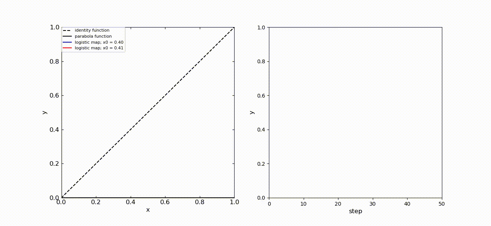
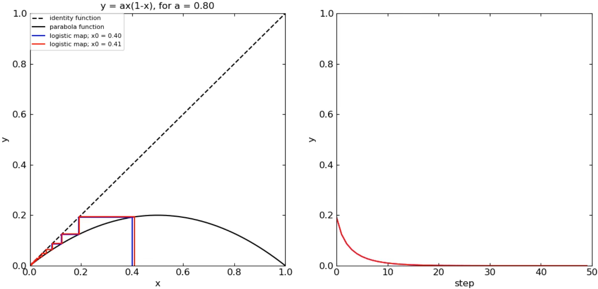

Logistic map is a one-dimensional (1D) discrete dynamical systems written by
\[
x_{n+1} = ax_n(1-x_n),
\]
where $x_n$ is a steppng point on a line bitween 0 and 1.
$\textit{For example}$, this system represents the population per period when the reproductive rate is non-linear.
The stepping point travels to the next place at $x_{n+1}$ after the $n$ counts up.
Here, we can see the interesting trajectory of $x_n$ as shown below, when the parameter of $a$ changes.

The figure on the right shows the dependence of $x_{n+1}$ on $n$ steps.
The complex trajectory in the range of $3.56 < a < 4.00$ is called as "Chaos".
Chaos is a behavior in which the trajectory changes significantly with small differences in initial values.
In the case of logistic map, the chaos is caused by the "discreteness" of the system.
If this system is continuous for time, we should replace the above relation by
\[
\frac{d}{dt} x = ( a - 1 ) x ( 1 - \frac{a}{a-1}x ).
\]
This equation can be solved analytically as follows:
\[
x(t) = \frac{(a-1)x(0)}{ax(0)(1-\rm{e}^{-(a-1)t}) + (a-1) \rm{e}^{-(a-1)t}}.
\]
Thus, the continuous logistic map does not appear any chaos behavior.
Let's go back to the discrete one again and see the detail.


● This page's source
● Top Page